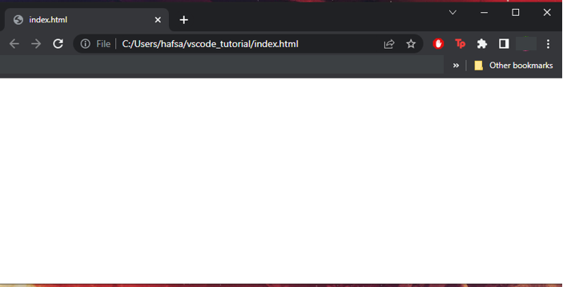

Sometimes it can be useful to customize your code editor and learn a few shortcuts to help you work. In this tutorial, we will cover a few ways you can work faster and more efficiently in VS Code.
Step 1.1
You can change the theme color of VS Code to make it easier on the eyes or more exciting to look at. Click on "View" at the top of VS Code, and then click on "Command Palette" from the drop down:
Step 1.2
In the search bar, type "theme", then click on "Preferences: Color"
Step 1.3
Use the arrow keys to see the other themes, then click on the one you'd like to use!
Step 2
When working on a file, you’ll notice a white circle next to the file name – this means that your work is not saved. To save, use the keyboard shortcut Control S (Windows) or Command S (Mac). You can also save by clicking “File” on the top left, then clicking “Save”.
Step 3.1
You can open two or more files on the same screen, to compare code or edit multiple files at once. First, open the folder containing the files you will be working from. Then click on the first file you’ll be working with to open it.
Step 3.2
Right click on the SECOND FILE you want to have open and select “Open to the side”. You will now see both files open next to each other in the same window.
Step 3.3
Repeat for as many files as you’d like to have open in the split screen view, but BEWARE that as you open more files it may become much harder to see each one. In this example, four files are open in a split screen view, causing much of the code to be cut off within each window.
Step 4.1
When working on websites, it’s helpful to see the changes you make, and there are many extensions that can help. Click the icon on the left side of VS Code labelled “Extensions”.
Step 4.2
In the search bar, type “open in browser”. This will pop up a list of extensions, but the one you need will be titled “open in browser”. Click on it.
Step 4.3
You will see a button to INSTALL the extension (the screenshot is taken on a computer that already has the extension installed – you should see “install” as an option). Click install.
Step 4.4
Now, navigate back to your index.html file by clicking the EXPLORER icon on the top left. Right click anywhere in the file, and you should see a popup that contains the option: “Open in Default Browser”. If you don’t see this, don’t worry! Try quitting VS Code and opening it up again – the option should be there when you right click in the index file. Click “Open in Default Browser”.
You will see a new window/tab pop up in your default browser. If you don’t have anything in your index file, this page will be empty. In the HTML tutorial, you will be able to see the content you write show up on this page.

Now that you're more familiar with VS Code, check out our HTML tutorial to get started on your website!